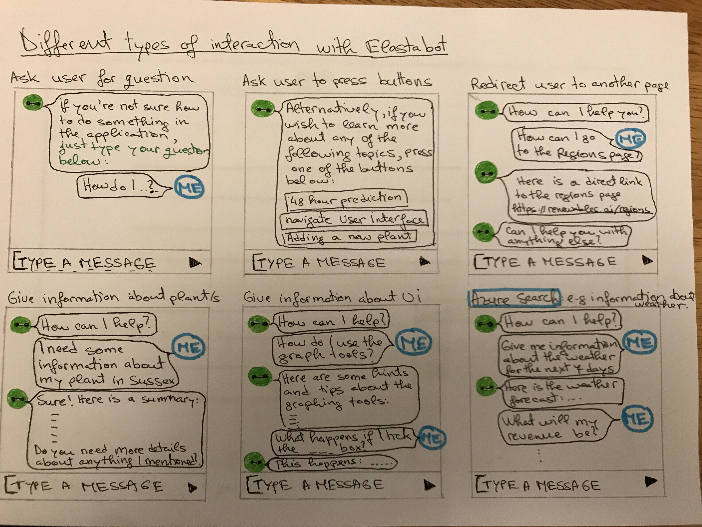

User Interaction 2 - Chatbox Prototype
Interacting with the Chatbox prototype
After conducting some research into how chatbots work and what techniques can be used to build rich and capable bots, our team started to sketch some straightforward interactions with the so called "Elastabot. As, we discovered that we can implement the ability to send or receive attachments, ask the bot for more information by pressing the relevant buttons or by asking direct questions, we began by drawing some basic conversations. We are aiming to later implement the bot to use Artificial Intelligence so that it could make relevant suggestions based on the conversation with the user.
